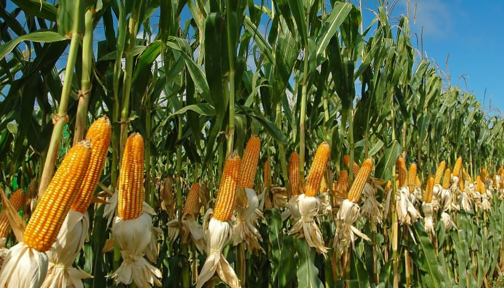
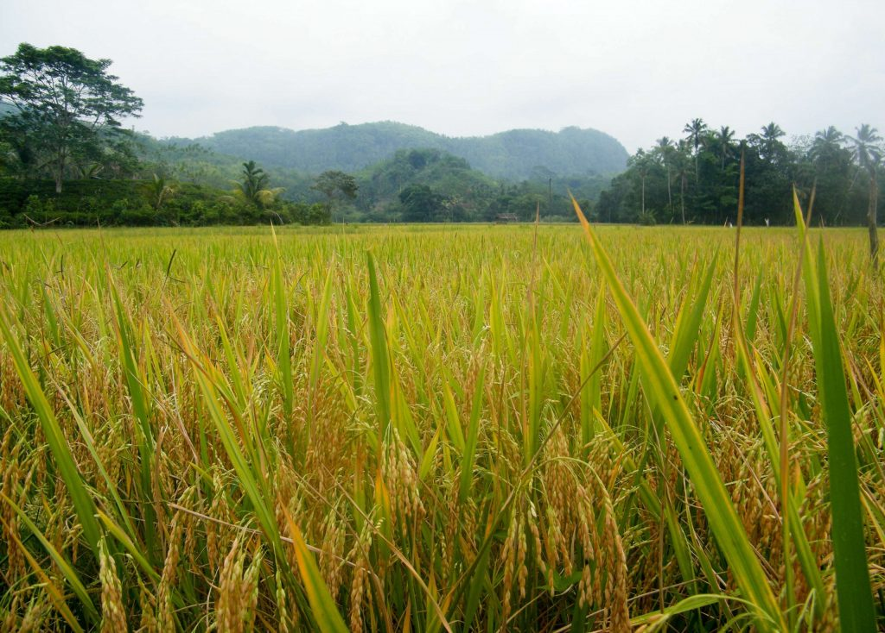
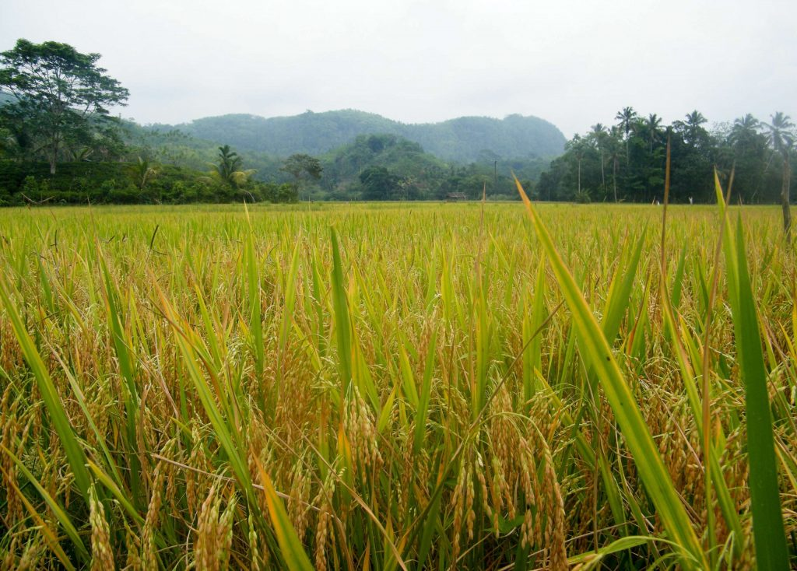
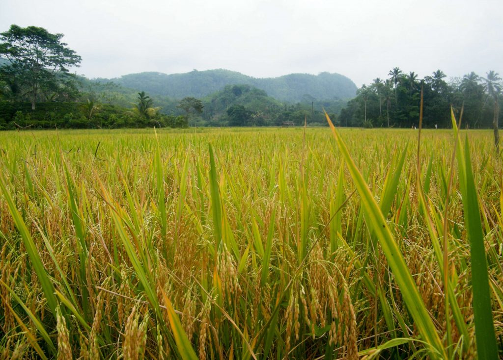
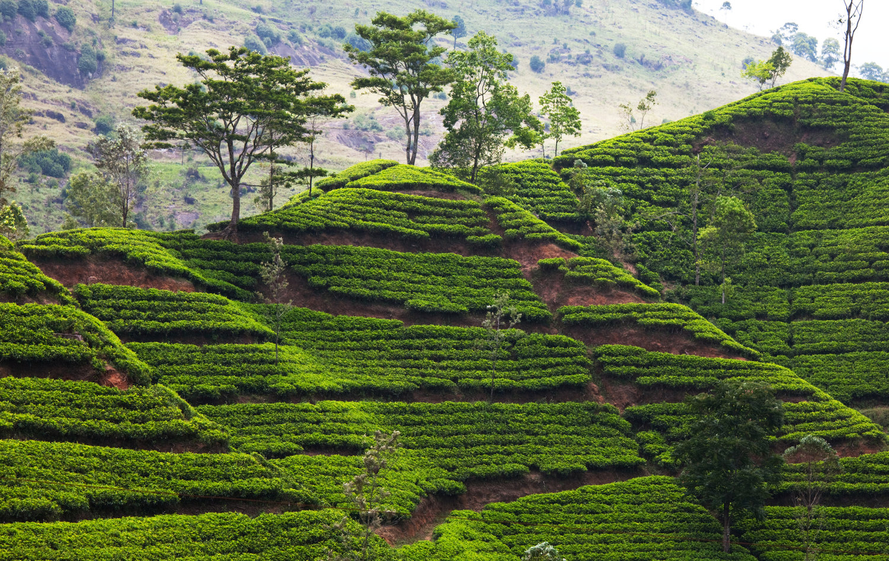

Agriculture Gallery
IMAGES OF SOME AGRICULTURAL SITES
Text Colour
Background Colour
Corn Field
 Paddy Field
Paddy Field

Maize is primarily a rainfed crop cultivated in the maha season in both settled and shifting types of highland cultivation. It is an important crop in the districts Anuradhapura, Ampara and Badulla.
"/>
Paddy Field
Rice happens to be the most prominent cultivation in Sri Lanka which occupies 0.77 miion hectares of land. During Maha season, the country cultivates an average of 560,000 hectares of land whereas during Yala it is 310,000 hectares of land.
"/> Tea PlantationTea production is one of the main sources of foreign exchange for Sri Lanka, and accounts for 2% of GDP, contributing over US$1.3 billion in 2021 to the economy of Sri Lanka.
"/>
×